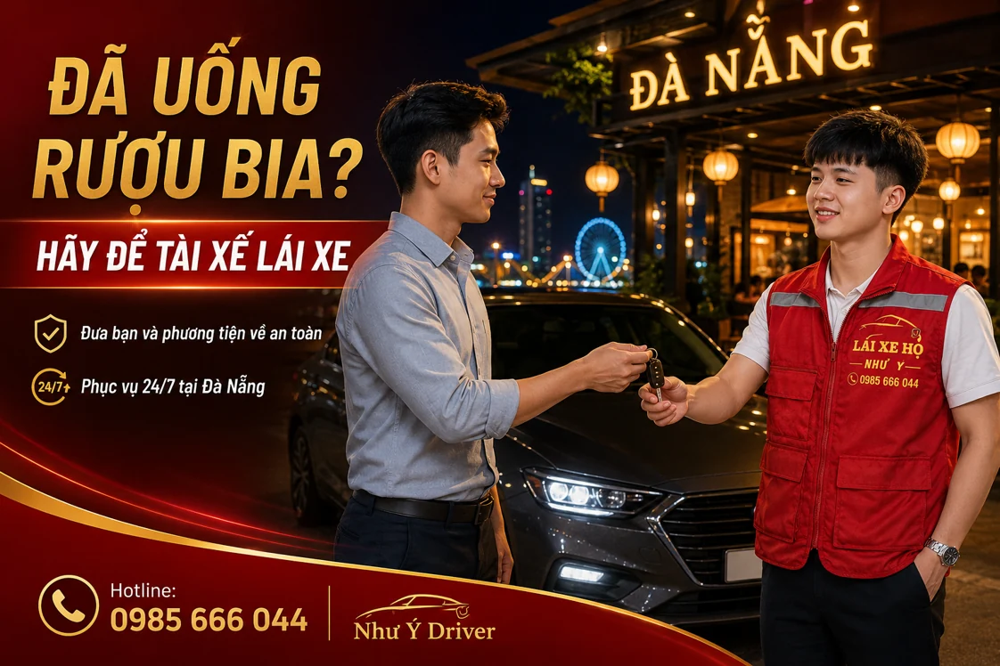
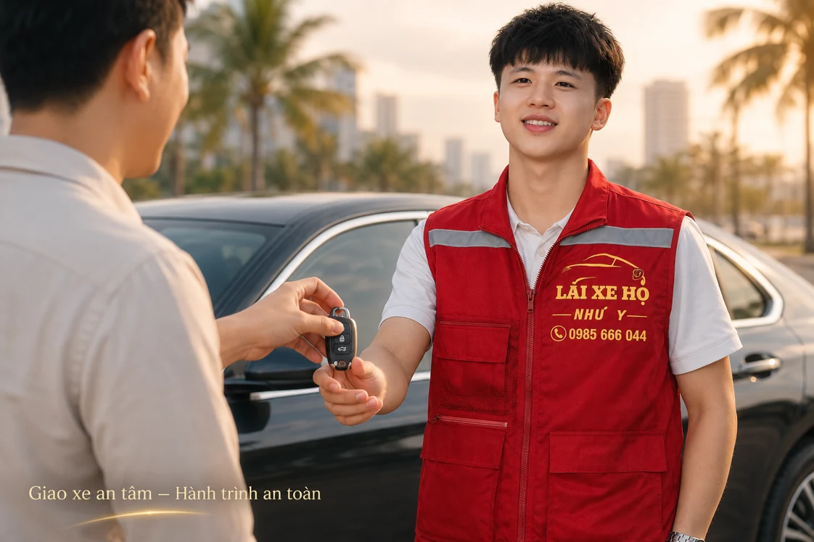

NHƯ Ý DRIVER · ĐỒNG HÀNH CÙNG BẠN
Lái xe hộ sau tiệc tại Đà Nẵng
Sau buổi tiệc, bạn có thể nhờ tài xế lái chính ô tô hoặc xe máy của mình về theo lộ trình đã thống nhất. Gửi Như Ý Driver nơi xe đỗ, điểm trả và giờ muốn về để xác nhận người lái, cách bố trí chuyến và chi phí.

Sau buổi tiệc, ai sẽ đưa xe của bạn về?
Bạn đi ô tô hoặc xe máy đến buổi liên hoan, tiệc cưới hay cuộc gặp bạn bè. Đến lúc ra về, điều cần giải quyết không chỉ là một chỗ ngồi về nhà mà còn là chiếc xe đang ở bãi. Lái xe hộ là phương án để bạn cân nhắc khi muốn đưa xe về cùng.
Tài xế đến nơi đã hẹn, nhận xe sau khi đối chiếu thông tin rồi lái chính phương tiện của khách đến điểm trả. Với từng loại xe và số người đi cùng, cách bố trí chuyến cần được trao đổi ngay khi đặt.
Lợi ích khi chủ động đặt người lái thay
- Đưa xe về cùng: thuận tiện nếu bạn còn cần dùng phương tiện vào sáng hôm sau.
- Chủ động trước khi ra về: có thời gian hỏi giá và chờ xác nhận tại địa điểm đang ngồi.
- Rõ điểm đón, điểm trả: thống nhất trước cả những chặng ghé dọc đường.
- Biết chi phí trước chuyến: trao đổi tổng phí theo loại xe, hành trình và giờ đi.
Chọn đúng dịch vụ cho ô tô hoặc xe máy
Nếu đi ô tô, báo dòng xe, hộp số và số người về cùng. Nếu có nhiều điểm trả khách, gửi đủ địa chỉ và thứ tự dự kiến. Thông tin lái hộ ô tô giúp bạn xem trước quy trình và mức giá theo quãng đường.
Nếu đi xe máy, nói rõ xe số, xe tay ga hay xe côn tay cùng số người cần di chuyển. Nếu người đi cùng không thể ngồi vững, hãy nhờ người thân hỗ trợ và trao đổi phương tiện khác phù hợp. Xem dịch vụ lái hộ xe máy để chuẩn bị đúng nhu cầu.
Giá lái xe hộ sau tiệc tính theo gì?
Chi phí phụ thuộc loại phương tiện, quãng đường và giờ khởi hành. Ô tô có mức tham khảo 150.000đ cho 0–5 km và 200.000đ cho 5–10 km; xe máy có bảng giá riêng. Giá thực tế được xác nhận trước chuyến đi.
Bạn có thể xem bảng giá ô tô và xe máy. Nếu tiệc kết thúc muộn, cần chờ hoặc muốn ghé thêm địa chỉ, nói rõ khi hỏi giá để nhận thông tin cho toàn bộ chuyến.
Đón tại nhà hàng hoặc bãi xe thế nào cho dễ tìm?
Gửi ghim vị trí kèm tên địa điểm và chỗ xe đang đỗ. Với nhà hàng có nhiều cổng, cho biết cổng bạn sẽ ra; với ô tô trong hầm, thêm tầng và số ô đỗ. Một địa chỉ chung có thể chưa đủ để tài xế gặp đúng người.
Chờ tại nơi sáng, dễ nhận biết và giữ điện thoại còn pin. Nếu giờ về thay đổi, báo sớm qua đầu mối đã đặt thay vì tự đổi điểm gặp trong lúc tài xế đang đến.
Kiểm tra người nhận xe trước khi giao chìa khóa
Đối chiếu thông tin tài xế với điều phối, thống nhất điểm đến và giới thiệu thao tác riêng của phương tiện. Cuối chuyến, nhận lại chìa khóa, kiểm tra đồ cá nhân và hoàn tất thanh toán theo nội dung đã thống nhất.
Để chủ động hơn, bạn có thể lưu mẫu tin nhắn đặt tài xế qua Zalo và kinh nghiệm đặt chuyến ban đêm trước buổi hẹn.
Đặt tài xế Như Ý Driver như thế nào?
- Liên hệ: gọi 0985 666 044, nhắn Zalo hoặc gửi biểu mẫu đặt tài xế.
- Gửi lịch trình: điểm đón, điểm đến, loại xe, giờ đi và các yêu cầu chờ hoặc ghé thêm điểm.
- Xác nhận chuyến: trao đổi tổng phí, thời gian đón dự kiến và thông tin người nhận xe.
- Bàn giao và kết thúc: kiểm tra xe, thực hiện hành trình, nhận lại chìa khóa và thanh toán theo nội dung đã thống nhất.

Cuối buổi tiệc, nên có một người phụ trách đặt chuyến
Khi cả nhóm cùng về, chỉ định một người giữ liên lạc sẽ tránh việc nhiều người gửi khác giờ đón hoặc địa chỉ trả. Người đó nên nắm cả vị trí xe, người giữ chìa khóa và danh sách các điểm xuống.
- Trước lúc ra bãi: chốt người đi theo từng xe, điểm cuối và các chặng ghé.
- Sau khi nhận phản hồi: kiểm tra giá, giờ đón dự kiến và thông tin tài xế.
- Tại điểm gặp: đối chiếu người nhận xe, chuẩn bị vé bãi và chìa khóa.
- Khi kế hoạch đổi: báo lại qua đầu mối đã đặt để kiểm tra lịch mới.
Nếu tiệc kéo dài tới khuya, đọc hướng dẫn đặt tài xế ban đêm để xem phần giờ khởi hành và phụ phí.
Câu hỏi thường gặp
Nên gọi từ lúc nào?
Bạn có thể liên hệ khi đã có giờ về dự kiến, thay vì đợi đến lúc đứng ở bãi xe. Thời gian đón sẽ được trao đổi theo lịch thực tế.
Nhờ tài xế trả nhiều người ở nhiều địa chỉ được không?
Hãy gửi đầy đủ các điểm dừng để điều phối kiểm tra hành trình và báo giá trước.
Nếu muốn gửi xe lại và đi phương tiện khác thì sao?
Hỏi địa điểm về việc giữ xe, giờ nhận lại và chi phí. Bạn có thể cân nhắc phương án phù hợp với lịch hôm sau.
Thông tin liên quan
HÃY CHỦ ĐỘNG CHO CHUYẾN ĐI
Cần người lái xe thay bạn?
Gửi điểm đón, điểm đến, loại xe và giờ đi. Như Ý Driver sẽ kiểm tra lịch, thống nhất chi phí và thời gian đón trước khi xác nhận chuyến.